Basic plotting of relational and categorical plots
relplotfor relational plotscatplotfor categorical plots
Necessary includes
import pandas as pd
import matplotlib.pyplot as plt
import seaborn as sns
Load data
student_data = pd.read_csv('student.csv')
mpg = pd.read_csv('mpg.csv')
survey_data = pd.read_csv('survey.csv')
Relational plots
Scatter plot
sns.relplot(x="absences", y="G3",
data=student_data,
kind='scatter',
hue="location",
hue_order=['Rural', 'Urban'])
plt.show()
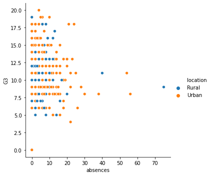
Subplots in rows and columns
sns.relplot(x="absences", y="G3",
data=student_data,
kind='scatter',
col='location',
col_order=['Rural','Urban'],
row='sex',
row_order=['M','F'],
size='age',
hue='age',
style='age', # change the style per additional cateogry
alpha=0.4 # transparency
)
# Show plot
plt.show()
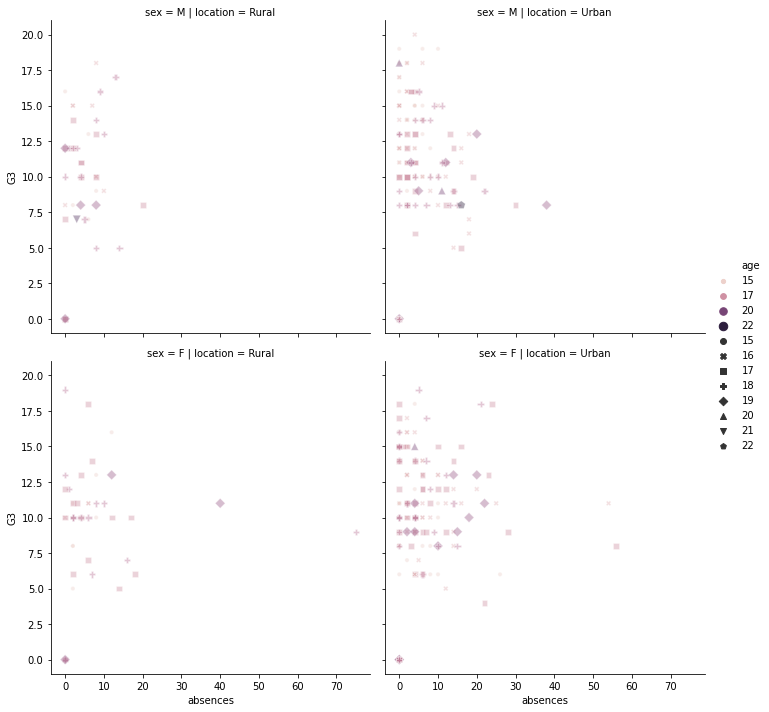
Line plot
sns.relplot(x='model_year', y='mpg', data=mpg, kind='scatter')
plt.show()
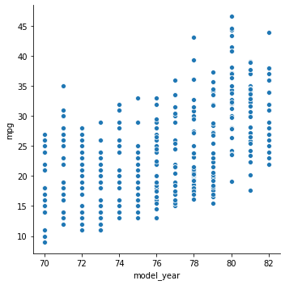
# Make the shaded area show the 95% CL
sns.relplot(x='model_year', y='mpg', data=mpg, kind='line')
plt.show()
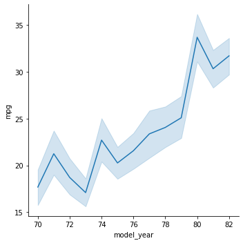
# Make the shaded area show the standard deviation
sns.relplot(x="model_year", y="mpg",data=mpg, kind="line", ci='sd')
plt.show()
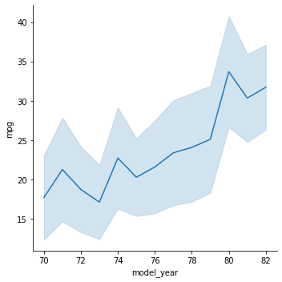
# Turn off the confidence interval
sns.relplot(x="model_year", y="mpg",data=mpg, kind="line", ci=None)
plt.show()
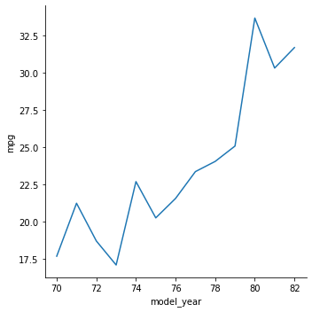
# Add markers and make each line have the same style
sns.relplot(x="model_year", y="horsepower",
data=mpg, kind="line",
ci=None, style="origin",
hue="origin",
markers=True,
dashes=False)
plt.show()
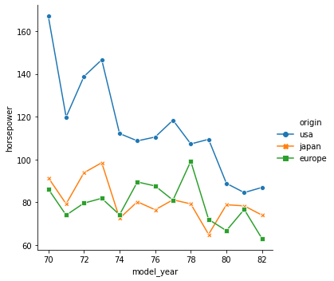
Categorical plots
Count plot (histogram)
survey_data['Mathematics'].unique()
survey_data['Interested in Math'] = survey_data['Mathematics']>3
# Create column subplots based on age category
sns.catplot(y="Internet usage", data=survey_data,
kind="count",
col='Loneliness')
plt.show()
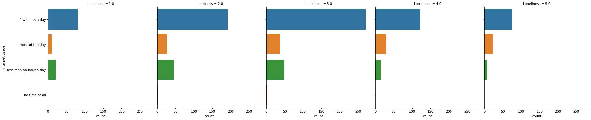
Bar plot
# Create a bar plot of interest in math, separated by gender
sns.catplot(x='Gender', y='Interested in Math', data=survey_data, kind='bar')
# Show plot
plt.show()
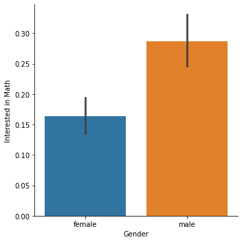
# Create bar plot of average final grade in each study category
sns.catplot(x='study_time', y='G3', data=student_data, kind='bar',
order=['<2 hours', '2 to 5 hours', '5 to 10 hours', '>10 hours'],
ci=None)
plt.show()
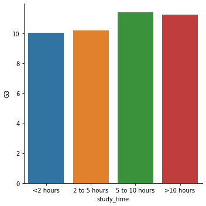
Box plot
# Plot the data that we want to convert to a box plot.
sns.catplot(x='study_time', y='G3', data=student_data)
# Show plot
plt.show()
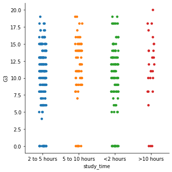
# Specify the category ordering
study_time_order = ["<2 hours", "2 to 5 hours",
"5 to 10 hours", ">10 hours"]
# Create a box plot and set the order of the categories
sns.catplot(x='study_time', y='G3', data=student_data, kind='box', order=study_time_order)
# Show plot
plt.show()
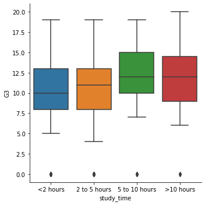
# Create a box plot with subgroups and omit the outliers
sns.catplot(x='internet', y='G3', data=student_data, hue='location', kind='box', sym='')
# Show plot
plt.show()
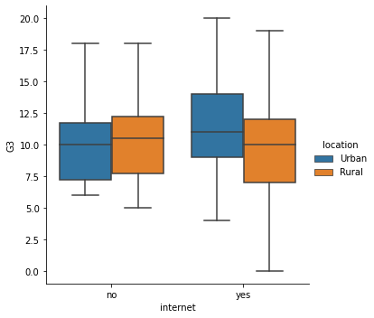
# Set the whiskers to 0.5 * IQR
sns.catplot(x="romantic", y="G3",
data=student_data,
kind="box", whis=0.5)
# Show plot
plt.show()
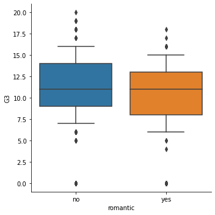
# Extend the whiskers to the 5th and 95th percentile
sns.catplot(x="romantic", y="G3",
data=student_data,
kind="box",
whis=[5,95])
# Show plot
plt.show()
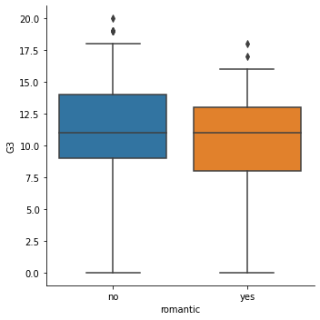
# Set the whiskers at the min and max values
sns.catplot(x="romantic", y="G3",
data=student_data,
kind="box",
whis=[0, 100])
# Show plot
plt.show()
Point plot
# Remove the lines joining the points
sns.catplot(x="famrel", y="absences",
data=student_data,
kind="point",
capsize=0.2,
join=False)
# Show plot
plt.show()
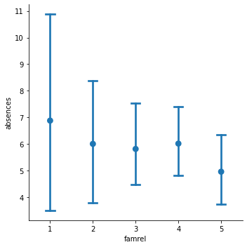
# Import median function from numpy
import numpy as np
# Plot the median number of absences instead of the mean
sns.catplot(x="romantic", y="absences",
data=student_data,
kind="point",
hue="school",
ci=None,
estimator=np.median)
# Show plot
plt.show()
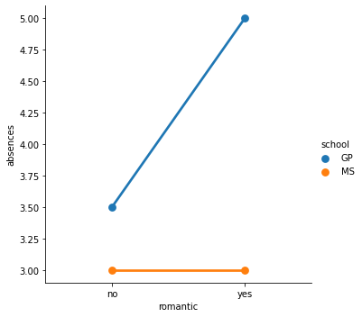
It looks like students in romantic relationships have a higher average and median number of absences in the GP school, but this association does not hold for the MS school.
Other formats
Scatter plot
# Change the legend order in the scatter plot
sns.scatterplot(x="absences", y="G3",
data=student_data,
hue="location",
hue_order=['Rural', 'Urban'])
plt.show()
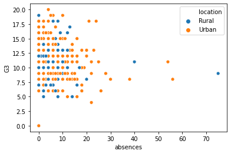
Count plot
This is essentially a histogram.
# Create a dictionary mapping subgroup values to colors
palette_colors = {'Rural': "green", 'Urban': "blue"}
# Create a count plot of school with location subgroups
sns.countplot(x='school', data=student_data, hue='location', palette=palette_colors)
plt.show()
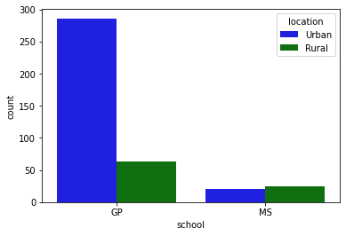